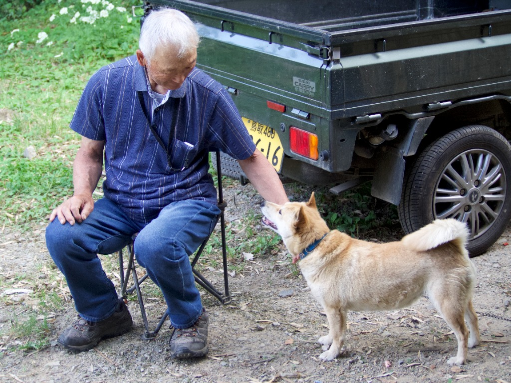

SAN-IN HIDDEN JAPANの
ブランドの起点は、一匹の犬でした。
山陰柴犬とは
山陰柴犬は、鳥取・島根を中心とする山陰地方固有の柴犬です。一般的な柴犬に比べて、四肢が長くスリムで引き締まった体型が特徴とされています。毛色については、保存活動に関わる資料でも「赤」と表現されるように、美しい赤みを帯びた被毛を持っています。
その系統は、鳥取県東部で飼育されていた「因幡犬（いなばけん）」と、島根県西部で飼育されていた「石州犬（せきしゅうけん）」に由来します。時代の変遷とともに純粋な地犬が減っていく中、生き残った因幡犬を基礎として石州犬を交配し、現在の系統が残されました。
絶滅の危機
かつては猟犬や番犬として人々の暮らしのすぐそばにいた彼らですが、戦争や伝染病などの影響で、戦時中には一時約20頭まで減少したとも伝えられています。
この「絶滅の危機」を救ったのは、他でもない地域の人々でした。有志らが血統の保存に尽力し、生き残ったわずかな個体から少しずつ命を繋いできました。（なお、この過程で1947年に生まれた「太刀号」という個体が、現在の系統を残す上で重要な役割を果たしたと言われています）
山陰柴犬育成会と、守る人々
その後、平成6年ごろには約100頭まで回復したものの、高齢化などによって再び飼育者が減少する危機が訪れます。そこで2004年、地元有志によって「山陰柴犬育成会」が結成されました。

現在では鑑賞会や品評会が定期的に開催され、繁殖や飼育者支援など、地道な保存活動が続けられています。この物語の主役は、犬そのものはもちろん、この小さな命を何代にもわたって「守っている人々」でもあります。彼らの情熱的な取り組みによって、近年の報道では約400〜500頭規模まで回復していると伝えられています。
なぜSAN-IN HIDDEN JAPANなのか
私たちが「山陰柴犬」に着目したのは、単に希少だからではありません。この犬が、地域の人々の並々ならぬ愛情と執念によって「現代に奇跡的に受け継がれている文化」そのものだからです。
山陰には、この犬のように「地元の人々に愛されながらも、外からは見えていない宝物」がたくさん眠っています。私たちは山陰柴犬をブランドの起点とし、彼らが生きる山陰の他の素晴らしい資源（工芸・食）を全国に届けていきます。